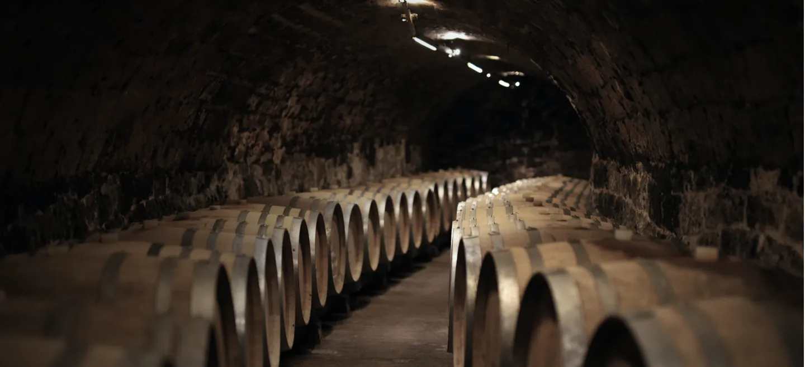

1
Kezdőlap
A pince fotója és a birtok mondata. Alatta három kártya — Év pincészete 2026, borkóstoló, PreCulture —, a borsor, a hét dűlő a saját kőzetével, a látogatás. Telefonon alul rögzített sáv: Foglalás · Borok · Kosár · Menü.

Ez a bemutató végigvezeti Önöket az új oldalon: mit nézzenek, milyen sorrendben, mi valódi benne, és mire van szükségünk Önöktől.
Egy mondatban
Nem új arculatot terveztünk. A birtok meglévő színeit, betűit, fotóit és szövegeit rendeztük úgy, ahogy Château Margaux, Krug, Opus One vagy Penfolds mutatja be magát: világos alapon, egy fényképpel és egy mondattal nyitva, telefonon és asztali gépen két külön élményként.
A bejárás
Minden lépésnél az élő oldal látszik telefonon. A gombokkal a teljes oldal nyílik meg, magyarul vagy angolul.
A pince fotója és a birtok mondata. Alatta három kártya — Év pincészete 2026, borkóstoló, PreCulture —, a borsor, a hét dűlő a saját kőzetével, a látogatás. Telefonon alul rögzített sáv: Foglalás · Borok · Kosár · Menü.
A vízió és az alapító szavai, a történet 1998-tól tíz lépésben, a hét dűlő telepítéssel, kitettséggel, kőzettel és fajtákkal, az évjáratok 2021-től, a csapat.
A Culture évjáratfal 2006-tól 2018-ig, saját palackfotóval és árral — ilyet Tokajban senki más nem mutat. Készítés, érlelés, Időkapszula, PreCulture, Tokaj öröksége.
Borkóstoló a föld alatt: a pince története, a négy program, a Holdvölgy Experience, a Millennium Bortrezor, a geológia, a hasznos tudnivalók és a foglalási űrlap a mai mezőkkel.
Mind a 32 tétel a webshop mai áraival. Szűrés száraz, édes, aszú és Hold and Hollo szerint; rendezés kollekció vagy ár szerint. Telefonon két, asztalon négy oszlop.
A Vision 2021 példáján: a birtok szlogenje és leírása, kóstolási jegyzet, az évjárat, és a teljes adatlap — alkohol, cukor, sav, SO₂, extrakt, besorolás, tárolás, fogyasztási hőmérséklet. Ugyanez mind a 32 tételen.
A mai hűségprogram: 5, 10, 15 és 20 % kedvezmény 50 000, 150 000, 300 000 és 600 000 Ft-nál, a két ajándék kóstolóval, a három lépéssel és a szabályokkal.
Mi valódi benne
A borok neve, kategóriája, kiszerelése, ára, szlogenje és leírása a webshopból; az angol szövegek a birtok saját angol oldalairól.
31 tétel technikai adatlapja és 22 tétel kóstolási és évjáratjegyzete a mai termékoldalakról — most először egy helyen, rendezetten.
A 130 kép a birtok 180 saját fotójából készült: palackok, pince, dűlők, a hét kőzet. Egyetlen generált kép sincs köztük.
A kosár és az űrlapok nem küldenek; a vásárlás és a foglalás a holdvolgy.com-on él. Ezt minden oldal tetején egy sáv mondja ki.
Amit Önöktől kérünk
Hogyan tovább
Önök végignézik a hét lépést, és jelzik, mi legyen másképp.
A változtatásokat ugyanígy, mérve és dokumentálva építjük be, a fenti anyagokkal együtt.
Az október 15. és január 15. közötti változtatási tilalom után — a prototípus addig érik.